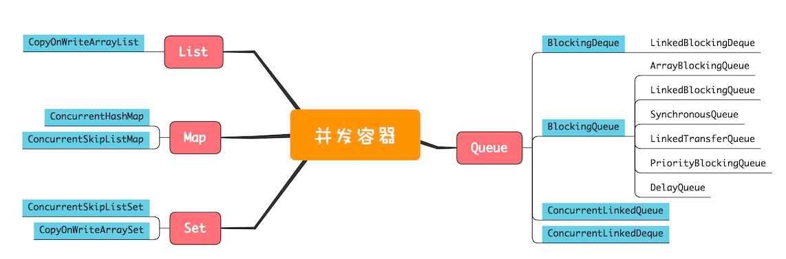
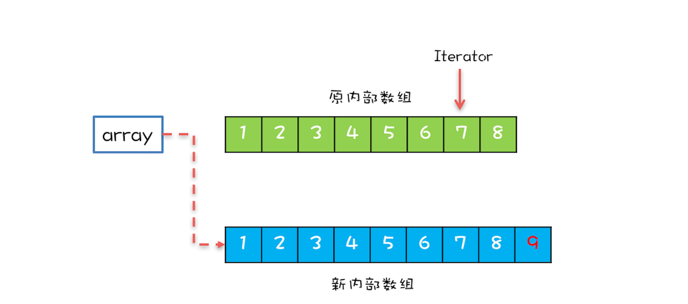
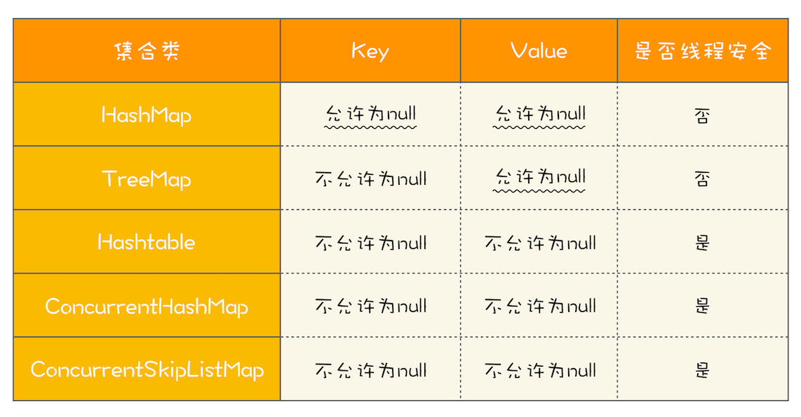
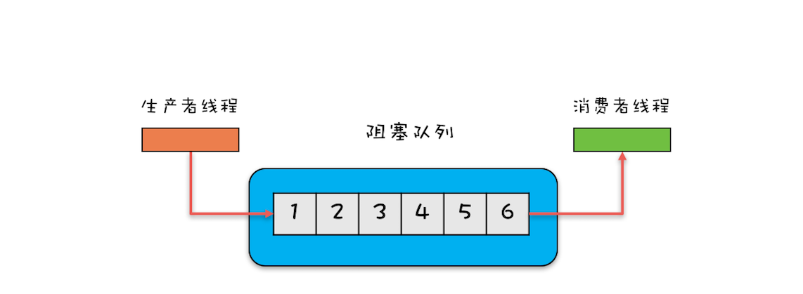
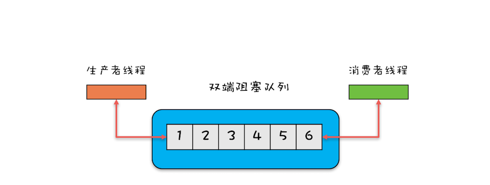

- 00 学习攻略 如何才能学好并发编程？.md
- 00 开篇词 你为什么需要学习并发编程？.md
- 01 可见性、原子性和有序性问题：并发编程Bug的源头.md
- 02 Java内存模型：看Java如何解决可见性和有序性问题.md
- 03 互斥锁（上）：解决原子性问题.md
- 04 互斥锁（下）：如何用一把锁保护多个资源？.md
- 05 一不小心就死锁了，怎么办？.md
- 06 用“等待-通知”机制优化循环等待.md
- 07 安全性、活跃性以及性能问题.md
- 08 管程：并发编程的万能钥匙.md
- 09 Java线程（上）：Java线程的生命周期.md
- 10 Java线程（中）：创建多少线程才是合适的？.md
- 11 Java线程（下）：为什么局部变量是线程安全的？.md
- 12 如何用面向对象思想写好并发程序？.md
- 13 理论基础模块热点问题答疑.md
- 14 Lock和Condition（上）：隐藏在并发包中的管程.md
- 15 Lock和Condition（下）：Dubbo如何用管程实现异步转同步？.md
- 16 Semaphore：如何快速实现一个限流器？.md
- 17 ReadWriteLock：如何快速实现一个完备的缓存？.md
- 18 StampedLock：有没有比读写锁更快的锁？.md
- 19 CountDownLatch和CyclicBarrier：如何让多线程步调一致？.md
- 20 并发容器：都有哪些“坑”需要我们填？.md
- 21 原子类：无锁工具类的典范.md
- 22 Executor与线程池：如何创建正确的线程池？.md
- 23 Future：如何用多线程实现最优的“烧水泡茶”程序？.md
- 24 CompletableFuture：异步编程没那么难.md
- 25 CompletionService：如何批量执行异步任务？.md
- 26 Fork_Join：单机版的MapReduce.md
- 27 并发工具类模块热点问题答疑.md
- 28 Immutability模式：如何利用不变性解决并发问题？.md
- 29 Copy-on-Write模式：不是延时策略的COW.md
- 3 个用户来信 打开一个新的并发世界.md
- 30 线程本地存储模式：没有共享，就没有伤害.md
- 31 Guarded Suspension模式：等待唤醒机制的规范实现.md
- 32 Balking模式：再谈线程安全的单例模式.md
- 33 Thread-Per-Message模式：最简单实用的分工方法.md
- 34 Worker Thread模式：如何避免重复创建线程？.md
- 35 两阶段终止模式：如何优雅地终止线程？.md
- 36 生产者-消费者模式：用流水线思想提高效率.md
- 37 设计模式模块热点问题答疑.md
- 38 案例分析（一）：高性能限流器Guava RateLimiter.md
- 39 案例分析（二）：高性能网络应用框架Netty.md
- 40 案例分析（三）：高性能队列Disruptor.md
- 41 案例分析（四）：高性能数据库连接池HiKariCP.md
- 42 Actor模型：面向对象原生的并发模型.md
- 43 软件事务内存：借鉴数据库的并发经验.md
- 44 协程：更轻量级的线程.md
- 45 CSP模型：Golang的主力队员.md
- 用户来信 真好，面试考到这些并发编程，我都答对了！.md
- 结束语 十年之后，初心依旧.md
20 并发容器：都有哪些“坑”需要我们填？
Java并发包有很大一部分内容都是关于并发容器的，因此学习和搞懂这部分的内容很有必要。
Java 1.5之前提供的同步容器虽然也能保证线程安全，但是性能很差，而Java 1.5版本之后提供的并发容器在性能方面则做了很多优化，并且容器的类型也更加丰富了。下面我们就对比二者来学习这部分的内容。
同步容器及其注意事项
Java中的容器主要可以分为四个大类，分别是List、Map、Set和Queue，但并不是所有的Java容器都是线程安全的。例如，我们常用的ArrayList、HashMap就不是线程安全的。在介绍线程安全的容器之前，我们先思考这样一个问题：如何将非线程安全的容器变成线程安全的容器？
在前面《12 | 如何用面向对象思想写好并发程序？》我们讲过实现思路其实很简单，只要把非线程安全的容器封装在对象内部，然后控制好访问路径就可以了。
下面我们就以ArrayList为例，看看如何将它变成线程安全的。在下面的代码中，SafeArrayList内部持有一个ArrayList的实例c，所有访问c的方法我们都增加了synchronized关键字，需要注意的是我们还增加了一个addIfNotExist()方法，这个方法也是用synchronized来保证原子性的。
SafeArrayList<T>{
//封装ArrayList
List<T> c = new ArrayList<>();
//控制访问路径
synchronized
T get(int idx){
return c.get(idx);
}
synchronized
void add(int idx, T t) {
c.add(idx, t);
}
synchronized
boolean addIfNotExist(T t){
if(!c.contains(t)) {
c.add(t);
return true;
}
return false;
}
}
看到这里，你可能会举一反三，然后想到：所有非线程安全的类是不是都可以用这种包装的方式来实现线程安全呢？其实这一点不止你想到了，Java SDK的开发人员也想到了，所以他们在Collections这个类中还提供了一套完备的包装类，比如下面的示例代码中，分别把ArrayList、HashSet和HashMap包装成了线程安全的List、Set和Map。
List list = Collections.
synchronizedList(new ArrayList());
Set set = Collections.
synchronizedSet(new HashSet());
Map map = Collections.
synchronizedMap(new HashMap());
我们曾经多次强调，组合操作需要注意竞态条件问题，例如上面提到的addIfNotExist()方法就包含组合操作。组合操作往往隐藏着竞态条件问题，即便每个操作都能保证原子性，也并不能保证组合操作的原子性，这个一定要注意。
在容器领域一个容易被忽视的“坑”是用迭代器遍历容器，例如在下面的代码中，通过迭代器遍历容器list，对每个元素调用foo()方法，这就存在并发问题，这些组合的操作不具备原子性。
List list = Collections.
synchronizedList(new ArrayList());
Iterator i = list.iterator();
while (i.hasNext())
foo(i.next());
而正确做法是下面这样，锁住list之后再执行遍历操作。如果你查看Collections内部的包装类源码，你会发现包装类的公共方法锁的是对象的this，其实就是我们这里的list，所以锁住list绝对是线程安全的。
List list = Collections.
synchronizedList(new ArrayList());
synchronized (list) {
Iterator i = list.iterator();
while (i.hasNext())
foo(i.next());
}
上面我们提到的这些经过包装后线程安全容器，都是基于synchronized这个同步关键字实现的，所以也被称为同步容器。Java提供的同步容器还有Vector、Stack和Hashtable，这三个容器不是基于包装类实现的，但同样是基于synchronized实现的，对这三个容器的遍历，同样要加锁保证互斥。
并发容器及其注意事项
Java在1.5版本之前所谓的线程安全的容器，主要指的就是同步容器。不过同步容器有个最大的问题，那就是性能差，所有方法都用synchronized来保证互斥，串行度太高了。因此Java在1.5及之后版本提供了性能更高的容器，我们一般称为并发容器。
并发容器虽然数量非常多，但依然是前面我们提到的四大类：List、Map、Set和Queue，下面的并发容器关系图，基本上把我们经常用的容器都覆盖到了。

并发容器关系图
鉴于并发容器的数量太多，再加上篇幅限制，所以我并不会一一详细介绍它们的用法，只是把关键点介绍一下。
（一）List
List里面只有一个实现类就是CopyOnWriteArrayList。CopyOnWrite，顾名思义就是写的时候会将共享变量新复制一份出来，这样做的好处是读操作完全无锁。
那CopyOnWriteArrayList的实现原理是怎样的呢？下面我们就来简单介绍一下
CopyOnWriteArrayList内部维护了一个数组，成员变量array就指向这个内部数组，所有的读操作都是基于array进行的，如下图所示，迭代器Iterator遍历的就是array数组。
执行迭代的内部结构图
如果在遍历array的同时，还有一个写操作，例如增加元素，CopyOnWriteArrayList是如何处理的呢？CopyOnWriteArrayList会将array复制一份，然后在新复制处理的数组上执行增加元素的操作，执行完之后再将array指向这个新的数组。通过下图你可以看到，读写是可以并行的，遍历操作一直都是基于原array执行，而写操作则是基于新array进行。

执行增加元素的内部结构图
使用CopyOnWriteArrayList需要注意的“坑”主要有两个方面。一个是应用场景，CopyOnWriteArrayList仅适用于写操作非常少的场景，而且能够容忍读写的短暂不一致。例如上面的例子中，写入的新元素并不能立刻被遍历到。另一个需要注意的是，CopyOnWriteArrayList迭代器是只读的，不支持增删改。因为迭代器遍历的仅仅是一个快照，而对快照进行增删改是没有意义的。
（二）Map
Map接口的两个实现是ConcurrentHashMap和ConcurrentSkipListMap，它们从应用的角度来看，主要区别在于ConcurrentHashMap的key是无序的，而ConcurrentSkipListMap的key是有序的。所以如果你需要保证key的顺序，就只能使用ConcurrentSkipListMap。
使用ConcurrentHashMap和ConcurrentSkipListMap需要注意的地方是，它们的key和value都不能为空，否则会抛出NullPointerException这个运行时异常。下面这个表格总结了Map相关的实现类对于key和value的要求，你可以对比学习。

ConcurrentSkipListMap里面的SkipList本身就是一种数据结构，中文一般都翻译为“跳表”。跳表插入、删除、查询操作平均的时间复杂度是 O(log n)，理论上和并发线程数没有关系，所以在并发度非常高的情况下，若你对ConcurrentHashMap的性能还不满意，可以尝试一下ConcurrentSkipListMap。
（三）Set
Set接口的两个实现是CopyOnWriteArraySet和ConcurrentSkipListSet，使用场景可以参考前面讲述的CopyOnWriteArrayList和ConcurrentSkipListMap，它们的原理都是一样的，这里就不再赘述了。
（四）Queue
Java并发包里面Queue这类并发容器是最复杂的，你可以从以下两个维度来分类。一个维度是阻塞与非阻塞，所谓阻塞指的是当队列已满时，入队操作阻塞；当队列已空时，出队操作阻塞。另一个维度是单端与双端，单端指的是只能队尾入队，队首出队；而双端指的是队首队尾皆可入队出队。Java并发包里阻塞队列都用Blocking关键字标识，单端队列使用Queue标识，双端队列使用Deque标识。
这两个维度组合后，可以将Queue细分为四大类，分别是：
1.单端阻塞队列：其实现有ArrayBlockingQueue、LinkedBlockingQueue、SynchronousQueue、LinkedTransferQueue、PriorityBlockingQueue和DelayQueue。内部一般会持有一个队列，这个队列可以是数组（其实现是ArrayBlockingQueue）也可以是链表（其实现是LinkedBlockingQueue）；甚至还可以不持有队列（其实现是SynchronousQueue），此时生产者线程的入队操作必须等待消费者线程的出队操作。而LinkedTransferQueue融合LinkedBlockingQueue和SynchronousQueue的功能，性能比LinkedBlockingQueue更好；PriorityBlockingQueue支持按照优先级出队；DelayQueue支持延时出队。

单端阻塞队列示意图
2.双端阻塞队列：其实现是LinkedBlockingDeque。

双端阻塞队列示意图
3.单端非阻塞队列：其实现是ConcurrentLinkedQueue。- 4.双端非阻塞队列：其实现是ConcurrentLinkedDeque。
另外，使用队列时，需要格外注意队列是否支持有界（所谓有界指的是内部的队列是否有容量限制）。实际工作中，一般都不建议使用无界的队列，因为数据量大了之后很容易导致OOM。上面我们提到的这些Queue中，只有ArrayBlockingQueue和LinkedBlockingQueue是支持有界的，所以在使用其他无界队列时，一定要充分考虑是否存在导致OOM的隐患。
总结
Java并发容器的内容很多，但鉴于篇幅有限，我们只是对一些关键点进行了梳理和介绍。
而在实际工作中，你不单要清楚每种容器的特性，还要能选对容器，这才是关键，至于每种容器的用法，用的时候看一下API说明就可以了，这些容器的使用都不难。在文中，我们甚至都没有介绍Java容器的快速失败机制（Fail-Fast），原因就在于当你选对容器的时候，根本不会触发它。
课后思考
线上系统CPU突然飙升，你怀疑有同学在并发场景里使用了HashMap，因为在1.8之前的版本里并发执行HashMap.put()可能会导致CPU飙升到100%，你觉得该如何验证你的猜测呢？
欢迎在留言区与我分享你的想法，也欢迎你在留言区记录你的思考过程。感谢阅读，如果你觉得这篇文章对你有帮助的话，也欢迎把它分享给更多的朋友。
© 2019 - 2023 Liangliang Lee. Powered by gin and hexo-theme-book.